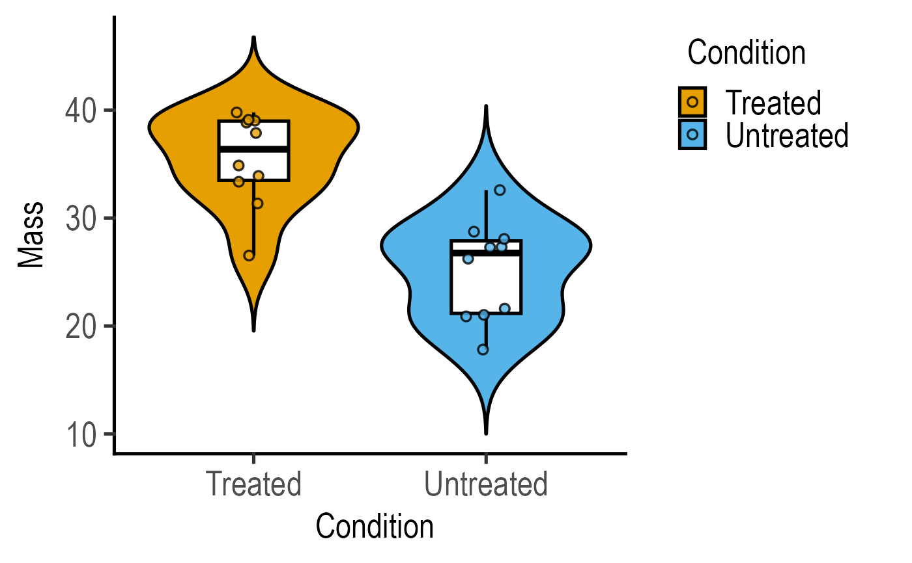

Plot a scatter plot on a violin plot with two variables.
Source:R/plot_scatterviolin.R
plot_scatterviolin.RdThere are three types of plot_dot_ functions that plot "dots" as data symbols plotted with geom_dotplot geometry. Variants can show summary and data distributions as bar and SD errors (plot_dotbar_sd; or SEM or CI95 error bars), box and whisker plots (plot_dotbox) or violin and box & whiskers plots (plot_dotviolin). They all take a data table, a categorical X variable and a numeric Y variable.
plot_scatterviolin(
data,
xcol,
ycol,
facet,
symsize = 3,
s_alpha = 0.8,
b_alpha = 0,
v_alpha = 1,
bwid = 0.3,
vadjust = 1,
jitter = 0.1,
trim = TRUE,
scale = "width",
TextXAngle = 0,
LogYTrans,
LogYBreaks = waiver(),
Ylabels = waiver(),
LogYLimits = NULL,
facet_scales = "fixed",
fontsize = 20,
symthick,
bthick,
vthick,
bvthick,
ColPal = c("okabe_ito", "all_grafify", "bright", "contrast", "dark", "fishy", "kelly",
"light", "muted", "pale", "r4", "safe", "vibrant"),
ColSeq = TRUE,
ColRev = FALSE,
SingleColour = "NULL",
...
)Arguments
- data
a data table object, e.g. data.frame or tibble.
- xcol
name of the column to plot on X axis. This should be a categorical variable.
- ycol
name of the column to plot on quantitative Y axis. This should be a quantitative variable.
- facet
add another variable from the data table to create faceted graphs using
ggplot2facet_wrap.- symsize
size of dots relative to
binwidthused bygeom_point. Default set to 3.- s_alpha
fractional opacity of symbols, default set to to 0.8 (i.e, 80% opacity). Set
s_alpha = 0to not show scatter plot.- b_alpha
fractional opacity of boxplots. Default is set to 0, which results in white boxes inside violins. Change to any value >0 up to 1 for different levels of transparency.
- v_alpha
fractional opacity of violins, default set to 1.
- bwid
width of boxplots; default 0.3.
- vadjust
number to adjust the smooth/wigglyness of violin plot (default set to 1).
- jitter
extent of jitter (scatter) of symbols, default is 0 (i.e. aligned symbols). To reduce symbol overlap, try 0.1-0.3 or higher.
- trim
set whether tips of violin plot should be trimmed at high/low data. Default
trim = T, can be changed to F.- scale
set to "area" by default, can be changed to "count" or "width".
- TextXAngle
orientation of text on X-axis; default 0 degrees. Change to 45 or 90 to remove overlapping text.
- LogYTrans
transform Y axis into "log10" or "log2"
- LogYBreaks
argument for
ggplot2[scale_y_continuous]for Y axis breaks on log scales, default iswaiver(), or provide a vector of desired breaks.- Ylabels
argument for
ggplot2[scale_y_continuous]for Y axis labels on log scales, default iswaiver(), or provide a vector of desired labels.- LogYLimits
a vector of length two specifying the range (minimum and maximum) of the Y axis.
- facet_scales
whether or not to fix scales on X & Y axes for all graphs. Can be
fixed(default),free,free_yorfree_x(for Y and X axis one at a time, respectively).- fontsize
parameter of
base_sizeof fonts intheme_classic, default set to size 20.- symthick
size (in 'pt' units) of outline of symbol lines (
stroke), default =fontsize/22.- bthick
thickness (in 'pt' units) of boxplots; default =
fontsize/22.- vthick
thickness (in 'pt' units) of violins; default =
fontsize/22.- bvthick
thickness (in 'pt' units) of both violins and boxplots; default =
fontsize/22.- ColPal
grafify colour palette to apply, default "okabe_ito"; see
graf_palettesfor available palettes.- ColSeq
logical TRUE or FALSE. Default TRUE for sequential colours from chosen palette. Set to FALSE for distant colours, which will be applied using
scale_fill_grafify2.- ColRev
whether to reverse order of colour within the selected palette, default F (FALSE); can be set to T (TRUE).
- SingleColour
a colour hexcode (starting with #), a number between 1-154, or names of colours from
grafifyor base R palettes to fill along X-axis aesthetic. Accepts any colour other than "black"; usegrey_lin11, which is almost black.- ...
any additional arguments to pass to
ggplot2geom_boxplot,ggplot2geom_point orggplot2geom_violin.
Value
This function returns a ggplot2 object of class "gg" and "ggplot".
Details
Related plot_scatter_ variants show data symbols using the geom_point geometry. These are plot_scatterbar_sd (or SEM or CI95 error bars), plot_scatterbox and plot_scatterviolin. Overplotting in plot_scatter variants can be reduced with the jitter argument.
The X variable is mapped to the fill aesthetic of dots, symbols, bars, boxes and violins.
Colours can be changed using ColPal, ColRev or ColSeq arguments. Colours available can be seen quickly with plot_grafify_palette.
ColPal can be one of the following: "okabe_ito", "dark", "light", "bright", "pale", "vibrant, "muted" or "contrast".
ColRev (logical TRUE/FALSE) decides whether colours are chosen from first-to-last or last-to-first from within the chosen palette.
ColSeq decides whether colours are picked by respecting the order in the palette or the most distant ones using colorRampPalette.
If you prefer a single colour for the graph, use the SingleColour argument.
Examples
#plot without jitter
plot_scatterviolin(data = data_t_pdiff,
xcol = Condition, ycol = Mass,
symsize = 2, trim = FALSE)

#no symbols
plot_scatterviolin(data = data_t_pdiff,
xcol = Condition, ycol = Mass,
s_alpha = 0,
symsize = 2, trim = FALSE)
 #single colour along X
plot_scatterviolin(data = data_t_pdiff,
xcol = Condition, ycol = Mass,
SingleColour = "pale_blue",
s_alpha = 0,
symsize = 2, trim = FALSE)
#single colour along X
plot_scatterviolin(data = data_t_pdiff,
xcol = Condition, ycol = Mass,
SingleColour = "pale_blue",
s_alpha = 0,
symsize = 2, trim = FALSE)